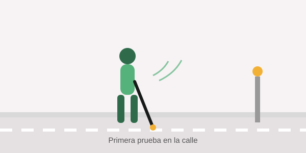
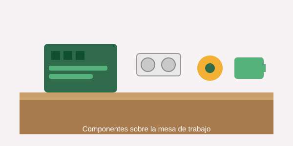

Novedades y aprendizajes del proyecto Bastón Inteligente.

Probamos el bastón en la calle
Publicado el 10/08/2026 · Categoría: Pruebas de campo
Después de varias semanas de trabajo en el taller, llevamos el
prototipo a la calle por primera vez. El sensor detectó correctamente
postes, escalones y autos estacionados, y el motor vibrador avisó con
la anticipación esperada.
Lo que aprendimos
Notamos que en espacios muy concurridos las vibraciones constantes
podían resultar molestas, así que ajustamos el umbral de distancia
para reducir las falsas alarmas.
Comentarios
Marina G.
¡Excelente iniciativa! ¿Van a compartir el código completo en el curso?
Equipo Bastón Inteligente
¡Sí! Todo el código de esta etapa ya está en la guía de estudio.

Componentes que usamos y por qué los elegimos
Publicado el 02/08/2026 · Categoría: Electrónica
Elegimos el sensor ultrasónico HC-SR04 por su bajo costo y precisión
suficiente para distancias cortas. Lo combinamos con un Arduino
Uno, es recomendable usar un arduino nano para ahorrar mas espacio, ideal para integrarlo dentro del bastón.
Lista de materiales
Arduino Nano, sensor HC-SR04, motor vibrador, batería LiPo recargable y regulador de voltaje.
Comentarios
Julián R.
¿Sirve reemplazar el Arduino Nano por un Uno para quien recién arranca?
Equipo Bastón Inteligente
Totalmente, el Uno funciona igual de bien para practicar antes del montaje final.